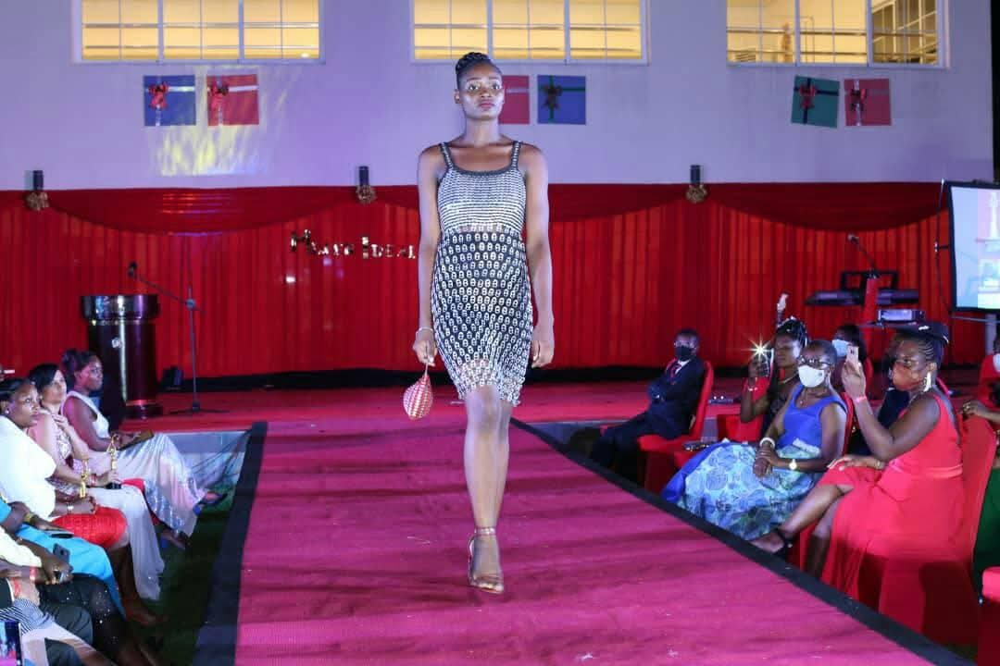

Piezas únicas, hechas a mano, que fusionan identidad africana,
reciclaje creativo y elegancia urbana.
Casiana Nanitursa Nchama Nguema, conocida artísticamente como Nany, es una diseñadora de moda y artesana de Guinea Ecuatorial cuya obra destaca por la fuerza estética, la creatividad y la conciencia social.
Desde muy joven desarrolló una sensibilidad especial hacia la reutilización de materiales y la transformación artística. Su filosofía se basa en dar una “segunda vida” a telas, fibras y elementos reciclados, convirtiéndolos en piezas únicas que combinan tradición africana, diseño contemporáneo y una profunda identidad cultural.
Su trabajo ha sido presentado en eventos como Mujer Ideal, FIMIAGE, KAFSAF Festival y múltiples pasarelas locales e internacionales. Nany es reconocida por su estilo atrevido, elegante y altamente detallista, donde cada pieza cuenta una historia.
Además de su labor artística, Nany impulsa proyectos de inclusión, empoderamiento femenino y artesanía sostenible, promoviendo un modelo de negocio que va más allá de la estética, impactando positivamente en su comunidad.

Cada creación es el resultado de un proceso artístico cuidadoso donde tradición y modernidad se fusionan.